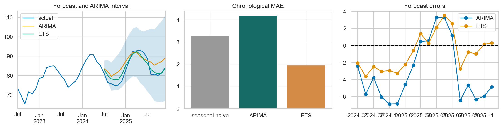

ML Hands-on Lab · 08 — Time series and state space
ARIMA and exponential smoothing
ARIMA forecasts using dependence in a differenced series; exponential smoothing maintains evolving level, trend and seasonal states. Both must earn their complexity against a forecast that simply repeats last year.
Read this page independently, then run the notebook cells in order. The figure below is a preserved historical notebook output; no model training was rerun for this editorial revision.
1. The experiment and its boundary
The notebook generates 144 monthly observations beginning in January 2014. Demand combines a linear trend, a 12-month sine wave, autocorrelated noise and a level increase at month index 105. The first 126 months fit the models; the final 18 months form one chronological holdout.
There is one forecast origin in the executed code, not a rolling-origin backtest. The level shift is already in the fitting history. Exploratory differencing and ADF views use the full generated series; treat them as teaching illustrations, not leakage-free model-order selection.
2. The mechanism
First differencing replaces levels with changes: Δyₜ=yₜ−yₜ₋₁. An AR term uses previous modeled values; an MA term uses previous forecast errors. The notebook fits a SARIMAX model with nonseasonal order (1,1,1) and a seasonal AR term at lag 12. It retains the notebook’s trend="t" setting; interpretation of that deterministic trend depends on the differenced model.
ARIMA family: model differenced values and correlated errors
ETS: update level, trend and seasonal states from new errors
seasonal-naive forecast: repeat the last observed 12-month cycle
The ETS comparison uses additive trend and additive 12-month seasonality, estimated from the training history. It forecasts by extending its final fitted states. Model names do not decide which assumption is better: the shared holdout and error pattern do.
3. Work through a tiny example
Levels [10, 12, 15, 16, 18] become changes [2, 3, 1, 2]. If a model forecasts the next two changes as 2 and 1, forecasts on the original scale are 20 and 21, cumulatively added to the last observed level 18.
For a simple level smoother, α=.2, old level 100 and new observation 110 produce .2×110 + .8×100 = 102. Additive ETS adds analogous updates for trend and seasonal state. A seasonal-naive forecast instead copies the corresponding month from the last cycle without fitting any such parameters.
4. Settings that change this experiment
| Notebook setting | What it changes |
|---|---|
| ARIMA order (1,1,1) | p=1 uses short-lag dependence; d=1 differences once; q=1 models one lag of innovations. More terms need evidence, not automatic escalation. |
| Seasonal order (1,0,0,12) | One seasonal AR term with monthly period 12. Wrong period or omitted seasonality can leave structured forecast errors. |
| ETS additive trend and seasonality; 18-step horizon | Additive seasonality assumes roughly fixed-amplitude seasonal effects. Longer horizons increase exposure to model misspecification and future changes. |
5. The actual notebook operation
These are the actual core operations from the matching notebook, reformatted for readability. They use the data, imports and variables defined in earlier cells; open the notebook to execute the complete experiment.
Notebook cell 10 · counting all cells from 1
train = series.iloc[:-18]
test = series.iloc[-18:]
print('Chronological train/test:', train.shape, test.shape, 'cutoff:', train.index[-1].date())Notebook cell 12 · counting all cells from 1
arima = SARIMAX(train, order=(1, 1, 1), seasonal_order=(1, 0, 0, 12), trend='t', enforce_stationarity=False, random_state=SEED).fit(disp=False, maxiter=80)
ets = ExponentialSmoothing(train, trend='add', seasonal='add', seasonal_periods=12, initialization_method='estimated').fit(optimized=True)
print('ARIMA AIC:', round(arima.aic, 1), 'ETS SSE:', round(ets.sse, 1))6. Baseline and what the metrics mean
The baseline repeats the last 12 training observations to cover the 18-month horizon. Mean absolute error averages abs(actual−forecast) over those same 18 points for seasonal naive, ARIMA and ETS; lower is better.
ARIMA produces a nominal 95% model-based forecast interval. Count how many held-out actuals fall inside it, but do not call coverage over 18 correlated points a validated 95% guarantee. ETS is shown as a point forecast here; the code does not compute an ETS interval.
7. Read the historical figure

- Left: the historical forecasts continue trend and seasonality, with an ARIMA uncertainty band. The band widens with horizon; width alone does not make it calibrated.
- Middle: ETS has the lowest historical holdout MAE; ARIMA is worse than the seasonal-naive baseline. This is a useful negative result, not a result to hide behind a generic “model improves” claim.
- Right: errors are actual minus forecast. Long runs below zero mean overprediction. The historical ARIMA errors show sustained negative periods, suggesting a systematic mismatch rather than only random scatter.
8. Break the assumption
The final cell fits an undifferenced, nonseasonal SARIMAX control with order (1,0,1) and a constant. It compares that model’s holdout MAE with the seasonal differenced model and prints the latter’s interval coverage. Several assumptions change together, so this is a misspecification demonstration rather than an isolated estimate of differencing’s benefit.
Read the actual printed errors, including cases where a simpler model wins. One 18-month period cannot tell you how either model behaves across every season, forecast horizon or later structural change.
9. Exercises with a decision to explain
- Add six earlier forecast origins, fitting each model only to the history available at that origin. Compare error by horizon and report variability across origins.
- Remove the simulated level shift, rerun, and compare residual patterns and interval coverage. State that this changes the data-generating process.
- Add a known external driver using SARIMAX exog. Ensure future driver values really would be available when the forecast is issued.
10. Run and inspect
Change one assumption at a time, keep the appropriate evaluation boundary, and compare the actual results. A baseline win or an inconclusive result is useful evidence.